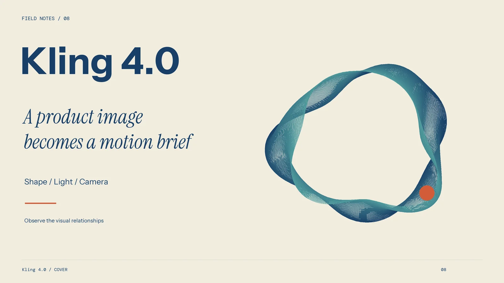
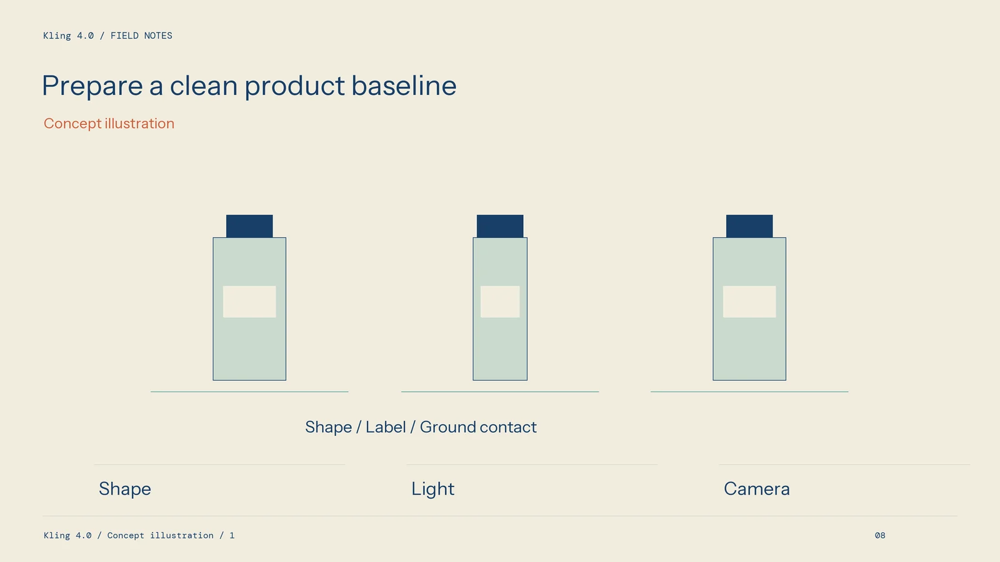
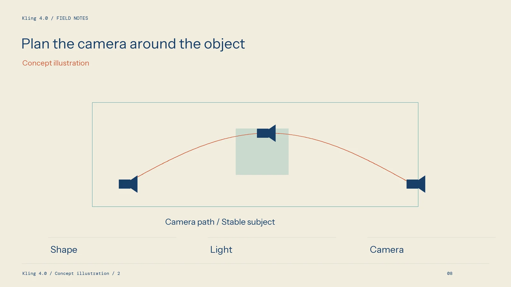

Turn Product Stills into a Reviewable Kling Video Plan

A seller with clear product photographs already has valuable material for a video brief. The task is to add a useful viewing change while keeping the item accurate. When exploring Kling, begin with a simple product presentation and a specific definition of what the final clip must show.
A generated scene still needs selection and finishing. Plan those stages before producing several versions, especially when the item has important labels, reflective surfaces, or a detail that a buyer uses to understand how it works.
Choose the most informative source image
Use a clean image that shows the intended product version, colour, and important structure. Check the silhouette and smaller details at a useful viewing size. A photograph with an obscured handle or a heavily compressed label gives the reviewer a weak basis for judging changes.
Keep the reference consistent with the selling page. Do not combine images of slightly different models and expect a reliable product definition. Collect approved branding and editable copy separately, so the final information can be checked and revised.

Think about the intended crop. Leave enough room around the item for captions and the chosen placement. A visually balanced wide photograph may need a different composition for a narrow video, and that decision belongs in the brief.
Write the scene in concrete terms
Describe the surface, environment, light direction, and camera intention. A product resting on a wooden table beside a window gives a clearer starting point than a series of praise words. State which parts of the product should remain visually fixed.
Separate camera movement from object action. A slow push-in can reveal a detail without asking the product to rotate. A small change of viewpoint can explain depth, but may also make a front label harder to read. Choose the movement that serves the information.
Keep the first trial focused. If the brief also needs a person, a liquid pour, and a changing background, plan separate shots rather than combining every requirement immediately. Each addition creates another relationship that must be reviewed.
Review the product before the atmosphere
Watch the complete result in playback. Compare its shape, colour, controls, and important markings with the source. Look for changes near highlights, reflections, and the edges of transparent materials. Review the beginning and ending, not only the strongest central moment.

Then judge whether the camera and environment support the presentation. An appealing background is useful only if the product remains clear. Reject a take that implies a different function or hides an important detail, even when the overall scene looks polished.
Keep a short record of the reason for each decision. A note such as label changes during the turn gives the next attempt a purpose. Retain the reference and submitted settings with that note.
Complete the edit with controlled assets
Add approved titles, product names, and any necessary graphics in the finishing stage. Check that captions do not cover the item and that the viewer has time to understand the message. Inspect the actual output at the destination's intended size.
Confirm the terms of the selected account and permissions for all supplied material before publication. Keep those records with the project. Do not assume that a free allowance, a watermark choice, or a preview establishes the rights for a particular commercial use.
A practical trial at kling4ai.io can help determine which source images and movements provide useful material. The finished video should be judged by its accurate product presentation and complete delivery checks, with another production method available for any detail that needs more precise treatment.